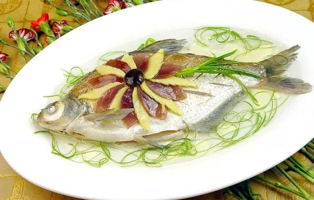
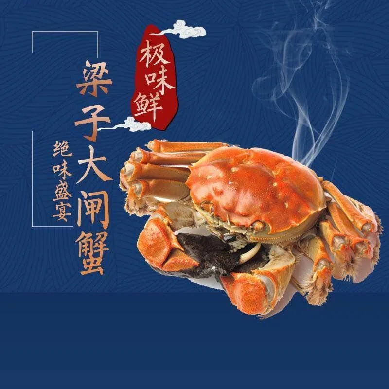

清蒸武昌鱼
"才饮长沙水，又食武昌鱼。"这句词让武昌鱼名扬四海，但很多人不知道， 这尾名鱼的本源地并不是今天的武昌，而是古武昌的核心区域——百湖相拥的鄂州。
武昌鱼学名团头鲂，俗称草鳊鱼、鳊鱼，头小体高、面扁背厚、呈菱形，脂肪丰富、肉味鲜美。 它属于草食性经济鱼类，存活率高、生长快。
名字的历史可以追到三国：孙权建都武昌（今鄂州）时，常以当地的鳊鱼招待群臣， 这被视为"武昌鱼"之名的起源。1800 多年间，它先后被 120 多位文人墨客吟诵过。
武昌鱼制作技艺 2015 年入选第三批市级非遗名录，2024 年入选第七批省级非遗名录。 做法从传统的蒸、煮、炙三种，发展到清蒸、油焖、滑溜等多种，其中清蒸最受欢迎。 鄂州本地广为流传的代表菜有 155 种之多，包括"吃鱼不刮鳞"的酥鳞武昌鱼。

从一条鱼到一个产业
2026 年 3 月，鄂州发布《关于加快推进武昌鱼品牌振兴和产业发展的实施意见》， 把武昌鱼元素融入城市规划，在主干道、核心商圈、高速进出口植入主题元素。 鄂州武昌鱼已入选农业农村部 2025 年农业品牌精品培育计划， 并在北上广深及武汉地区授权开设 100 余家餐厅。
鄂州十大特色美食
结合鄂州市文旅局、商务局"品味鄂州"行动成果与地方志记载整理，都是地道鄂州人舌尖上的"文化图腾"。

| 序号 | 名称 | 特点 |
|---|---|---|
| 01 | 清蒸武昌鱼 | 湖鲜之王，肉质细嫩、脂肪丰腴，清蒸最见原味 |
| 02 | 梁子湖大闸蟹 | 青壳白肚、膏黄饱满，生态循环养殖 |
| 03 | 东坡饼 | 与苏轼游历西山相关的传统点心 |
| 04 | 沙窝豆丝 | 柴火土灶手工炕制，豆香浓郁、口感筋道 |
| 05 | 太和千张 | 薄如蝉翼、色白如雪，明清时为朝廷贡品 |
| 06 | 梁子湖红菱 | 湖区水生特产，清甜爽口 |
| 07 | 梁子湖银针鱼 | 身形细长如银针，湖鲜珍品 |
| 08 | 涂镇藠头 | 腌制小菜，脆嫩开胃 |
| 09 | 沼山胡柚 | 鄂州地理标志产品之一 |
| 10 | 吴都莹籼 | 本地优质稻米 |
太和千张
又称谢埠千张，产于梁子湖区太和镇谢埠村。武昌山为幕阜山余脉，山下谢埠村边有一泉，泉水甘美， 村民取此泉水用本地上好黄豆磨浆蒸制。
成品薄如蝉翼、色白如雪，可凉拌、可清炒、可煮食。 取泉中水煮梁湖鱼、佐以太和千张，味道最佳。明清时为朝廷贡品， 光绪十一年（1885 年）载入《武昌县志》。
沙窝豆丝
产自临空经济区沙窝乡。一入冬就是豆丝上市的时节， 以早稻米、绿豆、黄豆等为原料，经浸泡磨浆、摊皮切丝制成。
灵魂在柴火土灶：柴火燃烧产生的独特火候和热量分布是现代灶具无法替代的， 它能让米浆在加热中产生微妙变化，赋予豆丝独特的焦香。 目前全乡有 300 余家中小规模豆丝加工厂和合作社，全年总产量超 2000 万斤，产值近亿元， 还远销澳大利亚、日本等国。
梁子湖大闸蟹
好蟹源于好水。梁子湖螃蟹采用"外湖引水、内塘净化"的生态循环养殖模式： 从梁子湖引水入塘，养殖尾水经净化后再回湖，实现零污染排放。 塘里种水草、投螺蛳、养花白鲢，还运用无人机投饵。
夏季还有被称为"夏季第一鲜"的"六月黄"——实为未成年的大闸蟹，壳薄黄满、肉质鲜嫩。 秋季捕捞季一般持续到 12 月下旬。
泽林鱼丸
鄂州泽林镇的特色美食，俗称"鱼粑"。坚持手工制作，选用新鲜活鱼， 经刮鳞、绞肉、搅拌、挤丸等工序，口感鲜嫩弹滑、Q 弹十足， 已成为当地的文化符号和地标性特产。
太和苕粉肉
鄂州人餐桌上必不可少的一道菜。半斤苕粉掺半斤水化成糊，放锅里熬，定型后再煎， 煎黄后用肉炒香即可出锅，晶莹剔透、有嚼劲。
相传过去穷人家买不起肉，就用太和盛产的红苕做成的苕粉来仿制红烧肉， 后来成了湖北一道家喻户晓的名菜。
吴都楚宴
湖北省商务厅"一桌楚菜宴天下"城市地标美食项目中的鄂州宴席，以 20 道地标菜肴讲述长江的故事。
凉菜启韵便有梁湖手撕鱼（紧实咸香）、卤水鄂城黄鹅（老卤慢浸、皮嫩肉香）、 冰镇蒲团莲子（荷香沁脾）等，尽显长江水乡之灵。
一口鲜味，如何 24 小时飞出国门
这是我觉得最神奇的部分：家乡的湖鲜，和家门口的机场，被一条冷链紧紧连在了一起。
湖中起网
凌晨捕捞。工作人员按要求专门挑选 3.5 两的母蟹和 4.5 两的公蟹，"日出前完成捕捞，这时螃蟹活动量小、损伤率低"。残缺瘦弱的一律淘汰。
捆扎包装
一只只青壳白肚、膘肥体壮的螃蟹被熟练地捆扎、包装，随后装车出发。整个过程与时间赛跑。
海关验放
数小时后，这批鲜活螃蟹在鄂州海关完成查验通关手续。依托航空冷链通道，鲜活螃蟹可在 24 小时内运抵全国各地。
机场起飞
搭乘花湖国际机场的国际航班飞往泰国曼谷。湖中起网到境外餐桌，全程不到 24 小时——这是梁子湖螃蟹首次"爬"上东南亚餐桌。
如果这批螃蟹的成活率超过 90%，且口感符合当地消费者需求，后续每周将有 150—250 公斤的稳定订单， 预计年订单量突破 5 万公斤。 ——湖北梁湖良品公司，谈梁子湖螃蟹出海
同样借机场"上新"的还有进口生鲜。在 2025 湖北农业博览会上， 鄂州展区的武昌鱼、沙窝豆丝，与通过花湖国际机场直达的榴莲、菠萝蜜、车厘子、三文鱼、埃塞俄比亚咖啡豆同台亮相， 成为当届展会一大亮点。
看看这座机场 →